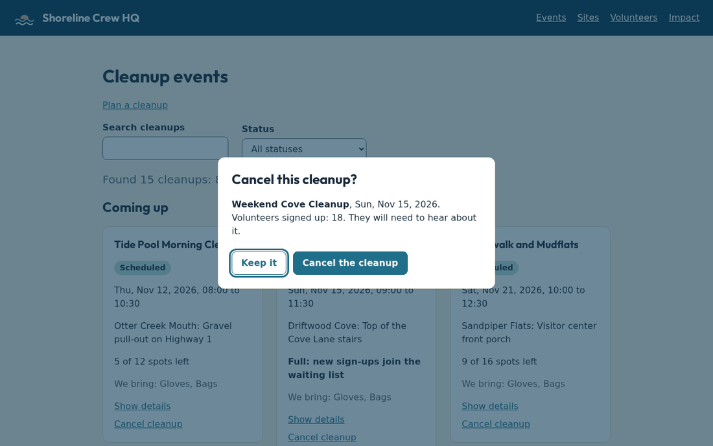
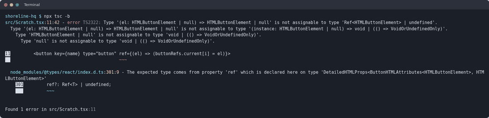

🧷 Lesson 4.3: Refs and the DOM
So far React has done all the talking to the page: you describe what the screen should show, and React changes the elements for you. Some jobs need a hand on the real element, though. Moving the keyboard focus, opening a modal dialog, remembering a timer between renders: none of these are "what the screen shows", so state is the wrong tool. Today you learn React's way to reach past itself, the ref, and use it for the job that matters most to keyboard and screen reader users: putting the focus where they need it. Shoreline Crew HQ gets a / shortcut to the search box, a form that takes you to the first thing to fix, and a "Cancel this cleanup?" dialog that behaves the way people expect.
🎯 Learning Objectives
By the end of this lesson, you will be able to:
- Explain what a ref is, when to choose a ref over state, and why reading a ref while rendering is a mistake
- Type refs to values and to DOM elements (
useRef<HTMLInputElement>(null)), and read the errors TypeScript gives fornull, the wrong element and React 19's required argument - Use callback refs, including React 19's cleanup function, and avoid the arrow-function return that React 19's types reject
- Pass a ref to your own component as an ordinary prop, the React 19 way
- Manage focus on purpose: a keyboard shortcut, the first invalid field, and a modal dialog rendered through a portal that gives the focus back when it closes
📦 Code for this lesson
Starting code: lesson-15-start.zip · Finished code: lesson-15-end.zip. Each folder has a README with the commands to run it. Copy .env.example to .env.local in shoreline-hq before npm run dev.
In This Lesson
🧷 A Ref: a Value React Does Not Watch
State has one superpower: when it changes, React renders the component again and the screen catches up. Most of the time that is exactly what you want. But some values have nothing to do with what the screen shows. The id of a running timer. The element a dialog should give the focus back to. Re-rendering when those change would be wasted work, and putting them in a plain variable does not work either, because a component's local variables start fresh on every render.
A ref fills that gap. useRef(initialValue) gives the component an object with one property, current. React hands back the same object on every render, so whatever you put in current stays there, and changing it does not make React render again.
💡 Mental model: the whiteboard and the pocket notebook
At a Shoreline Crew cleanup, the whiteboard on the van shows the plan: who is on which stretch, how many bags are full. When the lead changes the whiteboard, everyone looks up and adjusts. That is state. The lead also carries a pocket notebook: the van key's hiding spot, the harbor office's number, when the last radio check was. Writing in it changes nothing for anyone else, and it is still there at the end of the day. That is a ref. If the crew needs to see something, it goes on the whiteboard.
Here is a ref doing a typical job: keeping a timer's id for a timed sweep. Try it as src/Scratch.tsx (this lesson's experiment file), shown by temporarily making return <SweepTimer /> the first line of CurrentPage in App.tsx:
import { useEffect, useRef, useState } from 'react'
// A timer for a timed sweep: the screen shows the seconds, the ref keeps the interval's id
export function SweepTimer() {
const [seconds, setSeconds] = useState(0)
const timerRef = useRef<number | null>(null)
function start() {
if (timerRef.current !== null) return // already running
timerRef.current = window.setInterval(() => setSeconds((s) => s + 1), 1000)
}
function stop() {
if (timerRef.current === null) return
window.clearInterval(timerRef.current)
timerRef.current = null
}
// Leaving the page stops the timer too
useEffect(() => stop, [])
return (
<section>
<h2>Timed sweep</h2>
<p>Seconds: {seconds}</p>
<button type="button" onClick={start}>
Start
</button>
<button type="button" onClick={stop}>
Stop
</button>
</section>
)
}secondsis on the screen, so it is state.timerRefis the interval's id: nothing shows it, butstopneeds it, so it is a ref.useRef<number | null>(null)reads "a ref that holds a number or null, and starts as null".window.setIntervalreturns anumberin the browser, andnullmeans "not running". Unlike a DOM ref (next section), you write tocurrentyourself, as often as you like.- A second press of Start does nothing, because the ref still holds the first timer's id. Measured in the browser: three seconds after Start, then Stop, the page said "Seconds: 3", and two seconds later it still did.
useEffect(() => stop, [])returnsstopas the cleanup, so leaving the page clears the timer (Lesson 4.1's cleanup, in one line).
State (useState) | Ref (useRef) | |
|---|---|---|
| Changing it | calls the setter; React renders again | assign to .current; nothing renders |
| When the new value is visible | on the next render | at once, to any code that reads it |
| Read it while rendering? | yes, that is what it is for | no (the linter warns, see Common Mistakes) |
| Use it for | anything the screen shows | timer ids, the element to focus, the last value sent, DOM elements |
The rule of thumb: if the screen should change when the value changes, it is state. Otherwise, it can be a ref. And the third row matters: a ref is not a sneaky way to show a value without re-rendering. If you read ref.current in your JSX, the screen shows whatever it was at the last render and goes stale silently. That is why the linter flags it.
🎯 Refs to Elements, Typed
The second job of a ref is the one this lesson is named after: holding a real DOM element. Pass a ref object to an element's ref attribute, and React puts the element in current when it adds the element to the page (and puts null back when it removes it):
import { useRef } from 'react'
export function QuickNote() {
const noteRef = useRef<HTMLTextAreaElement>(null)
return (
<>
<label htmlFor="note">Note for the crew</label>
<textarea id="note" ref={noteRef} />
<button type="button" onClick={() => noteRef.current?.focus()}>
Write a note
</button>
</>
)
}Clicking Write a note moves the focus into the text area (measured: the focused element afterwards is textarea#note). focus() is a browser method on the element; there is no React way to say "focus this", because focus is not something you draw. That is the honest test for a DOM ref: you need it when you have to call a method on an element (focus, showModal, scrollIntoView, select) or measure it, not when you want to change what it shows.
How the types work
The type argument names the element: HTMLTextAreaElement, HTMLInputElement, HTMLFormElement, HTMLDialogElement. These are the browser's own types from TypeScript's DOM library, the same ones document.querySelector returns (Lesson 2.3). Passing null picks React's overload for DOM refs. Measured with this course's setup (making tsc print each type):
| You write | The ref's type | current is |
|---|---|---|
useRef<HTMLInputElement>(null) | RefObject<HTMLInputElement | null> | HTMLInputElement | null |
useRef<number | null>(null) | RefObject<number | null> | number | null |
useRef(0) | RefObject<number> (inferred) | number |
The | null is honest: before the first render finishes, and after the element leaves the page, there is no element. So TypeScript makes you check, and the strict settings you turned on in Module 2 report it:
const noteRef = useRef<HTMLTextAreaElement>(null)
function writeNote() {
noteRef.current.focus()
}Expected output (npx tsc -b)
src/Scratch.tsx:7:5 - error TS18047: 'noteRef.current' is possibly 'null'.
7 noteRef.current.focus()
~~~~~~~~~~~~~~~
Found 1 error in src/Scratch.tsx:7The fix is the optional chaining you already use: noteRef.current?.focus() means "if there is an element, focus it". In an event handler the element is always there, but TypeScript cannot know that, and the ?. costs nothing.
TypeScript also checks that the ref fits the element. A ref made for a div on an input:
Expected output (npx tsc -b, first lines)
src/Scratch.tsx:5:17 - error TS2322: Type 'RefObject<HTMLDivElement | null>' is not assignable to type 'Ref<HTMLInputElement> | undefined'.
Type 'RefObject<HTMLDivElement | null>' is not assignable to type 'RefObject<HTMLInputElement | null>'.
Type 'HTMLDivElement | null' is not assignable to type 'HTMLInputElement | null'.
Type 'HTMLDivElement' is missing the following properties from type 'HTMLInputElement': accept, alt, autocomplete, capture, and 54 more.
5 return <input ref={boxRef} aria-label="Bags" />
~~~Read it from the bottom up: a div lacks 58 properties an input has, so code that later calls boxRef.current?.select() would break. Change the type argument to the element you attach it to.
💡 Why this matters
Focus is the keyboard user's cursor. People who cannot use a mouse, and many screen reader users, move through a page one focusable element at a time. When an app removes the focused button, opens a dialog, or shows errors without moving the focus, those users are left somewhere unhelpful, often at the very top of the page. Teams treat "where does the focus go?" as part of every feature's design, and accessibility reviews check it. Refs are how React apps answer the question.
📞 Callback Refs
A ref object holds one element. Sometimes you need several, one for each item of a list, or you want to run code at the moment an element arrives. For that, the ref attribute also accepts a function, a callback ref: React calls it with the element when it is added to the page.
In React 19 the callback may return a cleanup function, which React calls when the element leaves the page, just like an effect's cleanup. Here three crew buttons are kept in a Map by name:
import { useRef } from 'react'
const crew = ['Maya', 'Luis', 'Hannah']
export function CrewButtons() {
const buttons = useRef(new Map<string, HTMLButtonElement>())
function focusCrew(name: string) {
buttons.current.get(name)?.focus()
}
return (
<>
{crew.map((name) => (
<button
key={name}
type="button"
ref={(el) => {
if (el) buttons.current.set(name, el) // the button is on the page
// React 19: the function you return runs when the button leaves the page
return () => {
buttons.current.delete(name)
}
}}
>
{name}
</button>
))}
<button type="button" onClick={() => focusCrew('Luis')}>
Back to Luis
</button>
</>
)
}Clicking Back to Luis focuses Luis's button (measured). Notice the braces around the cleanup's body. Without them, () => buttons.current.delete(name) returns what delete returns, a boolean, and React 19's types refuse it:
Expected output (npx tsc -b, first lines)
src/Scratch.tsx:18:11 - error TS2322: Type '(el: HTMLButtonElement | null) => () => boolean' is not assignable to type 'Ref<HTMLButtonElement> | undefined'.
Type '(el: HTMLButtonElement | null) => () => boolean' is not assignable to type '(instance: HTMLButtonElement | null) => void | (() => VoidOrUndefinedOnly)'.
Type '() => boolean' is not assignable to type 'void | (() => VoidOrUndefinedOnly)'.
Type '() => boolean' is not assignable to type '() => VoidOrUndefinedOnly'.
Type 'boolean' is not assignable to type 'VoidOrUndefinedOnly'.The last line says it plainly: a ref cleanup must return nothing. The same rule catches a pattern that is all over older tutorials, ref={(el) => (refs.current[i] = el)}; Common Mistakes shows it. The fix is always the same: give the arrow a body in braces, so it returns nothing unless you write return.
🔗 Passing a Ref to Your Own Component
Refs on <input> and <form> are easy, because those are browser elements. But the HQ's search box lives inside EventFilters, your own component. How does the events page get hold of the input inside it?
In React 19, ref is an ordinary prop for function components. Declare it in the props interface, destructure it, and put it on the element that should receive it:
import { useRef, type Ref } from 'react'
interface TextFieldProps {
id: string
label: string
/** React 19: ref is an ordinary prop */
ref?: Ref<HTMLInputElement>
}
export function TextField({ id, label, ref }: TextFieldProps) {
return (
<div>
<label htmlFor={id}>{label}</label>
<input id={id} ref={ref} />
</div>
)
}
export function MeetingPointForm() {
const meetingRef = useRef<HTMLInputElement>(null)
return (
<>
<TextField id="meeting" label="Meeting point" ref={meetingRef} />
<button type="button" onClick={() => meetingRef.current?.focus()}>
Edit the meeting point
</button>
</>
)
}Ref<HTMLInputElement>is React's type for "anything you can put in arefattribute for an input": a ref object or a callback ref. Using it means the parent can pass either.- The prop is optional (
ref?:), so<TextField id="…" label="…" />still works without one. - The parent writes
ref={meetingRef}as with any element. Clicking Edit the meeting point focusedinput#meetinginsideTextField(measured).
The component decides which element the ref reaches. TextField renders a div, a label and an input, and it chooses to expose the input, because that is what a parent would want to focus. That choice is part of the component's API, like its other props.
🧩 Version note: forwardRef
Before React 19, a function component never received ref as a prop, so components were wrapped in forwardRef, which passes the ref as a second argument. You will meet it in older code and libraries; it still works in React 19.3 (this compiles), but new code does not need it:
import { forwardRef } from 'react'
// Older code (React 18 and before): the ref arrives as a second argument
export const OldTextField = forwardRef<HTMLInputElement, { id: string; label: string }>(
function OldTextField({ id, label }, ref) {
return (
<div>
<label htmlFor={id}>{label}</label>
<input id={id} ref={ref} />
</div>
)
},
)⌨️ Focus Management
"Focus management" means deciding, on purpose, where the keyboard focus goes when the screen changes. Browsers handle the simple cases: Tab moves forward, clicking a button focuses it. Your app handles the rest. Four situations come up again and again, and the HQ has all of them:
| When… | Move the focus to… | In the HQ (today) |
|---|---|---|
| The focused element disappears | the nearest thing that makes sense next | Clear filters hides itself: focus the search box |
| A form finds problems | the first field to fix | "Plan a cleanup" after Publish |
| A dialog opens | inside the dialog, usually the safest choice | Keep it in "Cancel this cleanup?" |
| A dialog closes | back to the control that opened it | the card's Cancel cleanup button |
The first row is easy to miss. In the HQ right now, type "pelican" in the events search, then Tab to Clear filters and press Enter. The button clears the filters, and since there is nothing to clear any more, it disappears. Measured: the focused element afterwards was the page's body. The next Tab starts again at the skip link at the very top. One line in the project fixes it.
Keyboard shortcuts: listening to the whole document
Many sites jump to their search box when you press /. A shortcut listens to key presses anywhere on the page, which means listening on document, outside anything React renders. That is a job for an effect (Lesson 4.1): add the listener when the page appears, remove it in the cleanup. The project's version, from EventsPage:
// Press / anywhere on the page (except in a field) to jump to the search box
useEffect(() => {
function handleKeyDown(event: KeyboardEvent) {
if (event.key !== '/' || event.ctrlKey || event.metaKey || event.altKey) return
if (isTyping(event.target)) return
event.preventDefault() // or the / would be typed into the search box
searchRef.current?.focus()
}
document.addEventListener('keydown', handleKeyDown)
return () => document.removeEventListener('keydown', handleKeyDown)
}, [])KeyboardEventhere is the browser's type (the oneaddEventListener('keydown', …)passes), not React's. They share a name; Common Mistakes shows what happens when you import React's by accident.- Pressing / inside a text field must still type a slash, so key presses whose
targetis a field are left alone, and so are presses with Ctrl, ⌘ Cmd or Alt held (other shortcuts). event.preventDefault()stops the browser's own handling of the key. Without it, measured: the focus moves to the search box and the / lands in it, so the box says "/". (In Firefox, / also opens Quick Find;preventDefaultkeeps it for the page.)- The effect reads
searchRef, a ref, so the dependency array stays[]: React promises the ref object never changes.
⚠️ Single-key shortcuts and accessibility
WCAG, the web accessibility guidelines, asks that a shortcut made of a single character key can be turned off or remapped, or only works while a particular control has the focus. The reason: people using speech input can trigger a stray key by saying a word. The HQ's / skips form fields, which helps, but a full answer is a setting to turn shortcuts off. Going Further sketches it, and Lesson 7.3's settings store is where it would live. The search box also gets aria-keyshortcuts="/", which tells assistive technology the shortcut exists.
🪟 Portals and Dialogs
A confirmation dialog belongs to the card that opens it: it needs that event's title, and the card decides what happens after "yes". But in the page's HTML it should not sit inside the card. The card is an <article> inside a list item; a dialog in there would be read as part of the list, pick up the card's styles, and live inside any container that clips or transforms it.
A portal separates the two trees. createPortal(children, domNode) (from react-dom) renders children into a different DOM element, usually document.body, while they stay in the same place in React's tree:
"Same place in React's tree" has real consequences. The dialog reads the card's props and state, context reaches it (Lesson 5.2), and events bubble through React's tree, not the DOM's. A small proof:
import { useState } from 'react'
import { createPortal } from 'react-dom'
export function PortalBubble() {
const [clicks, setClicks] = useState(0)
return (
<div onClick={() => setClicks((c) => c + 1)} role="presentation">
<p>Clicks that reached this div: {clicks}</p>
{createPortal(<button type="button">Inside a portal</button>, document.body)}
</div>
)
}Measured: the button's DOM parent is body, nowhere inside #root, yet clicking it made the page say "Clicks that reached this div: 1". (The div with an onClick is only for the demo; real click targets are buttons.) For the HQ that means the dialog's buttons behave like any other part of EventCard.
The browser's own dialog
For years, a React dialog meant building everything yourself: a dimmed overlay, keeping Tab inside, closing on Escape, stacking it above the rest with z-index. Today the HTML <dialog> element does most of it. Its showModal() method, which you can only call through a ref, opens the dialog modally:
- The dialog is drawn above everything else (the browser's "top layer"), with a
::backdropyou can style. Noz-indexbattles, and parents withoverflow: hiddencannot clip it. - The rest of the page becomes inert: it cannot be clicked, focused or read by a screen reader. Measured: with the dialog open, Tab went from Keep it to Cancel the cleanup, then out of the page (in a normal window, to the browser's own controls), then back to Keep it, never to the page behind; and the / shortcut could not reach the search box.
- The focus moves to the first focusable element inside, and Escape closes the dialog and fires its
closeevent (React:onClose).
So the HQ's Dialog combines the two: a portal puts the <dialog> in body, a ref calls showModal(), and a second ref remembers where the focus was, so it can go back there. The parent opens the dialog by rendering it and closes it by not rendering it, which keeps "is it open?" in ordinary state. You will build it in the project; here is the plan:

⚠️ Common Mistakes
⚠️ Showing a ref's value on the screen
A counter that also wants to show how often its button was pressed, without "wasting" a render:
export function BagCounter() {
const [bags, setBags] = useState(0)
const clicksRef = useRef(0)
function addBag() {
clicksRef.current += 1
setBags(bags + 1)
}
return (
<p>
Bags: {bags} (button pressed {clicksRef.current} times)
<button type="button" onClick={addBag}>
Add a bag
</button>
</p>
)
}Expected output (npm run lint, trimmed)
⚠ react(refs): Cannot access refs during render
╭─[src/Scratch.tsx:14:37]
13 │ <p>
14 │ Bags: {bags} (button pressed {clicksRef.current} times)
· ────────┬────────
· ╰── Cannot access ref value during render
15 │ <button type="button" onClick={addBag}>
╰────
help: React refs are values that are not needed for rendering. Refs should only be accessed outside of render, such as in event handlers or effects. Accessing a ref value (the `current` property) during render can cause your component not to update as expectedIt happens to look right here, because setBags renders again right after. Remove that line and the number freezes. If the screen shows it, it is state; npx tsc -b cannot tell you this, the linter's react(refs) rule can.
⚠️ An arrow function that returns from a callback ref
This line from older tutorials stores each button in an array:
<button key={name} type="button" ref={(el) => (buttonRefs.current[i] = el)}>
Read the chain from the top: the arrow's type is "takes the element, returns the element" (an assignment is an expression with a value), but a callback ref may only return nothing or a cleanup function. React 19 changed this so cleanups could exist; older React ignored the return value. Fix it with braces: ref={(el) => { buttonRefs.current[i] = el }}.
⚠️ React's KeyboardEvent in a document listener
VS Code's auto-import is helpful, and sometimes wrong. If KeyboardEvent gets imported from 'react' in the shortcut's file, the handler now expects React's event type:
Expected output (npx tsc -b, trimmed)
src/pages/EventsPage.tsx:78:42 - error TS2769: No overload matches this call.
The last overload gave the following error.
Argument of type '(event: KeyboardEvent<Element>) => void' is not assignable to parameter of type 'EventListenerOrEventListenerObject'.
Type '(event: KeyboardEvent<Element>) => void' is not assignable to type 'EventListener'.
Types of parameters 'event' and 'evt' are incompatible.
Type 'Event' is missing the following properties from type 'KeyboardEvent<Element>': altKey, charCode, ctrlKey, code, and 15 more.
78 document.addEventListener('keydown', handleKeyDown)
~~~~~~~~~~~~~
...
Found 2 errors in the same file, starting at: src/pages/EventsPage.tsx:78"No overload matches this call" is long, but line 6 tells the story: a browser Event is missing React's properties. React's event types (KeyboardEvent<HTMLInputElement>, ChangeEvent from Lesson 3.4) are for props like onKeyDown in JSX; addEventListener gets the browser's. Remove the import and the global KeyboardEvent is used again.
⚠️ useRef with no argument
Older code writes useRef<number>(). React 19's types require the starting value:
Expected output (npx tsc -b, first lines)
src/Scratch.tsx:4:20 - error TS2554: Expected 1 arguments, but got 0.
4 const timerRef = useRef<number>()
~~~~~~Say what it starts as: useRef<number | null>(null) or useRef<number | undefined>(undefined).
🛠️ Project: Focus Where It Belongs
At the end of this project, pressing / on the events page jumps to the search box, Clear filters leaves the focus in the search box, "Plan a cleanup" takes you to the first field to fix, and every upcoming cleanup's card has a Cancel cleanup button that opens a "Cancel this cleanup?" dialog. Two new components, Dialog and ConfirmDialog, are ready for every confirmation the HQ will need.
Start both servers (node server.ts in shoreline-api, npm run dev in shoreline-hq) and delete src/Scratch.tsx (and the line you added to CurrentPage) if you still have them.
Step 1: EventFilters accepts a ref (6 min)
In src/components/EventFilters.tsx, import the Ref type:
-import type { ChangeEvent } from 'react'
+import type { ChangeEvent, Ref } from 'react'add the prop to the interface and the destructuring:
onClear: () => void
+ /** Points at the search box, so the page can move the focus there */
+ ref?: Ref<HTMLInputElement>
}
export function EventFilters({
query,
status,
onQueryChange,
onStatusChange,
onClear,
+ ref,
}: EventFiltersProps) {and give it to the search input, with the shortcut announced:
<input
+ ref={ref}
id="event-search"
type="search"
+ aria-keyshortcuts="/"
value={query}EventFilters exposes the search box, not the status menu or the whole <search> element: the search box is the one a page would want to focus. Run npx tsc -b: no errors, because the prop is optional and nothing passes it yet.
Step 2: The / shortcut, and focus after Clear filters (14 min)
In src/pages/EventsPage.tsx, import two more Hooks:
-import { useState } from 'react'
+import { useEffect, useRef, useState } from 'react'Add a helper above EventGroups that recognizes "someone is typing in a field". EventTarget is the browser's most general type for "something an event happened on"; instanceof narrows it, exactly as in Lesson 4.1's describeError:
// True when a key press is meant for a field someone is typing in
function isTyping(target: EventTarget | null): boolean {
return (
target instanceof HTMLInputElement ||
target instanceof HTMLTextAreaElement ||
target instanceof HTMLSelectElement
)
}At the top of EventsPage, create the ref and add the shortcut's effect (shown in Focus Management above):
const [status, setStatus] = useState<StatusFilter>('all')
+ const searchRef = useRef<HTMLInputElement>(null)
useDocumentTitle('Cleanup events')
+
+ // Press / anywhere on the page (except in a field) to jump to the search box
+ useEffect(() => {
+ function handleKeyDown(event: KeyboardEvent) {
+ if (event.key !== '/' || event.ctrlKey || event.metaKey || event.altKey) return
+ if (isTyping(event.target)) return
+ event.preventDefault() // or the / would be typed into the search box
+ searchRef.current?.focus()
+ }
+ document.addEventListener('keydown', handleKeyDown)
+ return () => document.removeEventListener('keydown', handleKeyDown)
+ }, [])Keep the focus useful when Clear filters disappears:
function clearFilters() {
setQuery('')
setStatus('all')
+ // The Clear filters button is about to disappear: keep the focus somewhere useful
+ searchRef.current?.focus()
}and pass the ref to EventFilters, exactly as you would to an <input>:
<EventFilters
+ ref={searchRef}
query={query}Open /events, click somewhere on the page's background and press /: the focus ring appears on the search box, which stays empty. Type pelican, Tab to Clear filters, press Enter: all fifteen cleanups are back and the focus is in the search box, ready for the next search (measured, on the dev server and the build).
Why does clearFilters focus the box right away, before React has rendered? The search box is already on the page; only the button is about to go. Focusing first means the focus is never on an element that disappears.
Step 3: Focus the first field to fix (8 min)
Lesson 3.5's form shows every problem at once, but leaves the focus on the button you pressed. A keyboard user then has to Tab back up through the form to find the first message. In src/components/NewEventForm.tsx:
-import { useActionState } from 'react'
+import { useActionState, useEffect, useRef } from 'react' const errors = state.kind === 'editing' ? state.errors : {}
+ const formRef = useRef<HTMLFormElement>(null)
+
+ // After every check that found problems, move the focus to the first field to fix
+ useEffect(() => {
+ if (state.kind !== 'editing') return
+ const firstInvalid = formRef.current?.querySelector<HTMLElement>('[aria-invalid="true"]')
+ firstInvalid?.focus()
+ }, [state])- <form action={formAction} noValidate className={formStyles.form}>
+ <form ref={formRef} action={formAction} noValidate className={formStyles.form}>- Every submit makes the action return a new state object, so
[state]runs the effect after every check, even when the same fields are still wrong. On the first render there are no errors, so nothing is found and nothing moves. - The effect runs after React has updated the page, so the fields already carry
aria-invalid="true"from Lesson 3.5.querySelectorreturns the first match in page order, which is the order people read the form. querySelector<HTMLElement>is the generic overload from Lesson 2.3: without the type argument the result isElement | null, which has nofocusmethod. With it,HTMLElement | null(both measured), and the?.afterformRef.currentaddsundefined.
Open /events/new and press Publish on the empty form: the focus lands on the title. Now type a good title and press Publish again:

Because the field also has aria-describedby pointing at its message (Lesson 3.5), a screen reader announces the field and "Choose one of the cleanup sites." together.
Step 4: A Dialog component (14 min)
Create src/components/Dialog.tsx:
import { useEffect, useId, useRef, type ReactNode } from 'react'
import { createPortal } from 'react-dom'
import styles from './Dialog.module.css'
interface DialogProps {
/** The dialog's heading, also its accessible name */
title: string
/** Called when the person presses Escape: the parent should stop rendering the dialog */
onClose: () => void
children: ReactNode
}
// A modal dialog: render it to open it, stop rendering it to close it
export function Dialog({ title, onClose, children }: DialogProps) {
const dialogRef = useRef<HTMLDialogElement>(null)
const openerRef = useRef<Element | null>(null)
const titleId = useId()
useEffect(() => {
const dialog = dialogRef.current
if (dialog === null) return
if (!dialog.open) {
openerRef.current = document.activeElement // remember where the focus was
dialog.showModal() // focus moves into the dialog, the page behind it goes inert
}
return () => {
// Closing: give the focus back to the control that opened the dialog
const opener = openerRef.current
if (opener instanceof HTMLElement) opener.focus()
}
}, [])
return createPortal(
<dialog ref={dialogRef} aria-labelledby={titleId} className={styles.dialog} onClose={onClose}>
<h2 id={titleId}>{title}</h2>
{children}
</dialog>,
document.body,
)
}- Two refs, two jobs.
dialogRefholds the<dialog>element, so the effect can callshowModal().openerRefholds a plain value, the element that had the focus before the dialog opened (document.activeElementis typedElement | null). Nothing on the screen shows it, so it is a ref, not state. - Focus out. The cleanup runs when the parent stops rendering the dialog. It gives the focus back with
focus(), after narrowingElementtoHTMLElement(only HTML elements havefocus). Measured: when Escape closes the dialog, the browser itself puts the focus back; when a button removes the dialog, the browser does not, and without this cleanup the focus fell tobody. - The
!dialog.opencheck is for Strict Mode. In development, React runs the effect, its cleanup, and the effect again (Lesson 4.1). Without the check, the second run would remember Keep it (already focused) as the opener. Measured on the dev server: with the check removed, pressing Keep it left the focus onbody. useId()makes an id that is unique on the page, soaria-labelledbycan point at the heading even when several dialogs exist. The dialog's accessible name becomes its title.- Escape fires the dialog's
closeevent;onClosetells the parent, which stops rendering it.
Create src/components/Dialog.module.css. The backdrop is Deep Tide, see-through:
.dialog {
max-width: min(28rem, calc(100vw - 2rem));
padding: 1.5rem;
border: 1px solid var(--border);
border-radius: 0.75rem;
background: var(--surface);
color: var(--text);
}
.dialog::backdrop {
background: rgb(11 57 84 / 0.6);
}
.dialog h2 {
margin-top: 0;
}Step 5: ConfirmDialog and the Cancel cleanup button (14 min)
A confirmation is a dialog with a question and two answers. Create src/components/ConfirmDialog.tsx:
import type { ReactNode } from 'react'
import buttonStyles from './Button.module.css'
import styles from './ConfirmDialog.module.css'
import { Dialog } from './Dialog.tsx'
interface ConfirmDialogProps {
title: string
/** The safe choice, first in the dialog: it gets the focus when the dialog opens */
keepLabel: string
confirmLabel: string
onKeep: () => void
onConfirm: () => void
children: ReactNode
}
// A question with two answers. Escape counts as the safe answer.
export function ConfirmDialog({
title,
keepLabel,
confirmLabel,
onKeep,
onConfirm,
children,
}: ConfirmDialogProps) {
return (
<Dialog title={title} onClose={onKeep}>
{children}
<div className={styles.actions}>
<button type="button" className={buttonStyles.secondary} onClick={onKeep}>
{keepLabel}
</button>
<button type="button" className={buttonStyles.primary} onClick={onConfirm}>
{confirmLabel}
</button>
</div>
</Dialog>
)
}and src/components/ConfirmDialog.module.css:
.actions {
display: flex;
flex-wrap: wrap;
gap: 0.75rem;
margin-top: 1.5rem;
}The safe answer comes first, so showModal() focuses it: an accidental Enter keeps the cleanup. Escape counts as the safe answer too (onClose={onKeep}). The labels say what happens ("Keep it", "Cancel the cleanup"), never just "OK" and "Cancel", which would be confusing in a dialog about cancelling.
Now replace src/components/EventCard.tsx:
import { useState } from 'react'
import type { CleanupEvent, Site } from '../api/types.ts'
import { getAvailability } from '../utils/availability.ts'
import { formatDate } from '../utils/format.ts'
import cardStyles from './Card.module.css'
import { ConfirmDialog } from './ConfirmDialog.tsx'
import styles from './EventCard.module.css'
import { SpotsLine } from './SpotsLine.tsx'
import { StatusBadge } from './StatusBadge.tsx'
import { VisuallyHidden } from './VisuallyHidden.tsx'
interface EventCardProps {
event: CleanupEvent
/** undefined when the event's site is not in the list */
site: Site | undefined
}
export function EventCard({ event, site }: EventCardProps) {
const [showDetails, setShowDetails] = useState(false)
const [confirming, setConfirming] = useState(false)
const [readyToCancel, setReadyToCancel] = useState(false)
function cancelCleanup() {
setConfirming(false)
setReadyToCancel(true)
}
return (
<article className={cardStyles.card}>
<h3>{event.title}</h3>
<p className={styles.badges}>
<StatusBadge status={event.status} />
</p>
<p>
<time dateTime={event.date}>{formatDate(event.date)}</time>, {event.startTime} to{' '}
{event.endTime}
</p>
<p>{site ? site.name : 'Site to be confirmed'}: {event.meetingPoint}</p>
<SpotsLine availability={getAvailability(event)} capacity={event.capacity} />
{event.suppliesProvided.length > 0 && (
<p className={styles.supplies}>We bring: {event.suppliesProvided.join(', ')}</p>
)}
<div className={styles.actions}>
<button
type="button"
className={styles.toggle}
aria-expanded={showDetails}
onClick={() => setShowDetails((shown) => !shown)}
>
{showDetails ? 'Hide details' : 'Show details'}
<VisuallyHidden> for {event.title}</VisuallyHidden>
</button>
{event.status === 'scheduled' && (
<button
type="button"
className={styles.toggle}
aria-haspopup="dialog"
onClick={() => setConfirming(true)}
>
Cancel cleanup<VisuallyHidden> for {event.title}</VisuallyHidden>
</button>
)}
</div>
{showDetails && <p>{event.description}</p>}
{event.status === 'scheduled' && (
// Always in the page, so screen readers notice when the text appears
<p role="status" className={styles.note}>
{readyToCancel && 'Ready to cancel. Nothing is sent to shoreline-api yet (Lesson 7.2).'}
</p>
)}
{confirming && (
<ConfirmDialog
title="Cancel this cleanup?"
keepLabel="Keep it"
confirmLabel="Cancel the cleanup"
onKeep={() => setConfirming(false)}
onConfirm={cancelCleanup}
>
<p>
<strong>{event.title}</strong>, {formatDate(event.date)}. Volunteers signed up:{' '}
{event.spotsTaken}. They will need to hear about it.
</p>
</ConfirmDialog>
)}
</article>
)
}- Only scheduled cleanups get the button. Its name for screen readers is "Cancel cleanup for Weekend Cove Cleanup", the same pattern as "Show details for…" in Lesson 3.6, and
aria-haspopup="dialog"says it opens a dialog. confirmingis ordinary state:truerenders theConfirmDialog(which opens itself),falseremoves it (and the cleanup returns the focus). The dialog is written inside the<article>, but the portal puts it inbody.- Nothing is cancelled for real yet: changing a cleanup needs an organizer's sign-in (Lesson 5.2) and a request that changes data (Lesson 7.2). Until then the card says so in its status line, which is always in the page so screen readers notice when the text appears (as in Lesson 3.5).
Add the row for the two buttons at the end of src/components/EventCard.module.css:
cursor: pointer;
}
+
+/* The card's buttons, side by side (Lesson 4.3) */
+.actions {
+ display: flex;
+ flex-wrap: wrap;
+ gap: 0.5rem 1.5rem;
+}
+
+.note:empty {
+ margin: 0;
+}Step 6: Check it with the keyboard (6 min)
npx tsc -b
npm run lint
npm run buildExpected output (npm run lint)
> shoreline-hq@0.0.0 lint
> oxlint
Found 0 warnings and 0 errors.
Finished in 15ms on 35 files with 150 rules using 20 threads.Then put the mouse aside and use only the keyboard on /events:
- Tab to Cancel cleanup on Weekend Cove Cleanup and press Enter. The page dims, and the focus ring is on Keep it.
- Press Tab a few times: the focus stays in the dialog (or visits the browser's own controls), never the page behind.
- Press Escape: the dialog closes and the focus is back on Cancel cleanup. Press Enter again and choose Keep it: same place.
- Open it once more and choose Cancel the cleanup: the card says "Ready to cancel. Nothing is sent to shoreline-api yet (Lesson 7.2)." and the focus is still on its button.
All of it was measured in Chromium, on the dev server (with Strict Mode) and on the build. If your focus ends up on the page's top instead, check the cleanup in Dialog and the !dialog.open check.
Your own project: go through the screens you listed for your Lesson 11.1 app. Where does something disappear while it has the focus, where would a form send people after an error, and what needs a confirmation? Write one line per case: "When…, the focus goes to…".
✅ Project Completion Checklist
- ☐
EventFilterstakes an optionalrefprop typedRef<HTMLInputElement>and gives it to the search input - ☐ / on the events page focuses the search box without typing a slash, and still types a slash inside a field
- ☐ After Clear filters, the focus is in the search box
- ☐ "Plan a cleanup" moves the focus to the first field to fix after every check that finds problems
- ☐ "Cancel this cleanup?" opens in a portal, starts on Keep it, closes with Escape or either button, and gives the focus back to the card's button
- ☐
npx tsc -b,npm run lintandnpm run buildpass, andsrc/Scratch.tsxis deleted
🏋️ Hands-on Exercises
Exercises 1 and 2 are part of the lesson (about 15 minutes together, included in the lesson time).
🏋️ Exercise 1: A useShortcut Hook
The shortcut's effect is a dozen lines of EventsPage that have nothing to do with events. Move them into src/hooks/useShortcut.ts, a Hook that takes the key and a function to call, so the page needs one line: useShortcut('/', () => searchRef.current?.focus()).
💡 Hint
The function is new on every render, like load in Lesson 4.2's useApi. Which React Hook lets the effect call the latest one without listing it as a dependency? And which value should be in the dependency array now?
✅ Solution
import { useEffect, useEffectEvent } from 'react'
// True when a key press is meant for a field someone is typing in
function isTyping(target: EventTarget | null): boolean {
return (
target instanceof HTMLInputElement ||
target instanceof HTMLTextAreaElement ||
target instanceof HTMLSelectElement
)
}
/** Calls onPress when someone presses `key` outside a form field (without Ctrl, Cmd or Alt). */
export function useShortcut(key: string, onPress: () => void): void {
const pressed = useEffectEvent(onPress)
useEffect(() => {
function handleKeyDown(event: KeyboardEvent) {
if (event.key !== key || event.ctrlKey || event.metaKey || event.altKey) return
if (isTyping(event.target)) return
event.preventDefault()
pressed()
}
document.addEventListener('keydown', handleKeyDown)
return () => document.removeEventListener('keydown', handleKeyDown)
}, [key])
}In EventsPage.tsx, delete isTyping and the effect, import useShortcut, change the React import to import { useRef, useState } from 'react', and call:
// Press / anywhere on the page (except in a field) to jump to the search box
useShortcut('/', () => searchRef.current?.focus())npx tsc -b and npm run lint pass, and the page behaves exactly as before (measured: / focuses the empty search box, Clear filters keeps the focus there). The key is in the array, so a page that changed its shortcut would get a new listener. The course's code keeps the effect in the page.
🏋️ Exercise 2: "Discard this plan?"
Give "Plan a cleanup" a Discard button after Publish. It asks "Discard this plan?" with the answers Keep editing and Discard; discarding goes back to /events (window.location.assign('/events') until Lesson 6.1 brings the router).
💡 Hint
One piece of state, discarding, and a ConfirmDialog rendered when it is true. Which type must the Discard button have so it does not submit the form?
✅ Solution
Import useState and ConfirmDialog, add const [discarding, setDiscarding] = useState(false) under formRef, then the button at the end of the actions and the dialog after the form:
<button
type="button"
className={buttonStyles.secondary}
onClick={() => setDiscarding(true)}
>
Discard
</button>
</div>
</form>
{discarding && (
<ConfirmDialog
title="Discard this plan?"
keepLabel="Keep editing"
confirmLabel="Discard"
onKeep={() => setDiscarding(false)}
onConfirm={() => window.location.assign('/events')}
>
<p>What you typed in the form will be lost.</p>
</ConfirmDialog>
)}Measured: the dialog opened with the focus on Keep editing; choosing it returned the focus to Discard with "Dune Grass Cleanup" still in the title; choosing Discard loaded /events. type="button" matters: a button in a form without a type is a submit button. One ConfirmDialog, two very different questions: that is the payoff of building it once. The course's code does not keep this button.
🏋️ Exercise 3: The first invalid field, with callback refs (Stretch)
Optional stretch, not counted in the lesson time (about 20 minutes).
Step 3 finds the first invalid field by searching the form's HTML for aria-invalid="true". Do it without querySelector: keep every field's element in a Map<EventField, HTMLElement> filled by a callback ref (with a React 19 cleanup), and pick the first field with an error in the form's order.
💡 Hint
fieldProps(field) already returns the props every field needs; a ref can be one of them. The order: a module-level EventField[] listing the fields top to bottom, and find.
✅ Solution
Above initialState, the order; inside the component, the map and the effect (the form loses its ref):
// The fields in the order the form shows them
const fieldOrder: EventField[] = [
'title',
'siteId',
'date',
'startTime',
'endTime',
'capacity',
'meetingPoint',
'description',
]
// ...
const fields = useRef(new Map<EventField, HTMLElement>())
// After every check that found problems, move the focus to the first field to fix
useEffect(() => {
if (state.kind !== 'editing') return
const first = fieldOrder.find((field) => state.errors[field] !== undefined)
if (first !== undefined) fields.current.get(first)?.focus()
}, [state])and in fieldProps, after 'aria-describedby':
ref: (element: HTMLElement | null) => {
if (element) fields.current.set(field, element)
return () => {
fields.current.delete(field)
}
},Measured: same results as Step 3 (the title first on an empty form, the Beach site menu after a good title). The ref is typed for HTMLElement, so the same function fits the inputs, the select and the text area. Why a fixed order and not the map's own order? The site menu has a key that changes (Lesson 3.5), so React replaces it, the cleanup deletes it and it is added again at the end of the map. Which version would you rather maintain?
🎯 Quick Quiz
🎯 Check Your Understanding
Question 1: A click handler runs clicksRef.current += 1 and nothing else. What happens on the screen?
Question 2: const searchRef = useRef<HTMLInputElement>(null). What is the type of searchRef.current?
Question 3: In React 19, how should EventsPage get a ref to the search input that lives inside EventFilters?
Question 4: Why does ref={(el) => (buttonRefs.current[i] = el)} fail npx tsc -b with React 19's types?
Question 5: EventCard renders ConfirmDialog, and Dialog puts its <dialog> into document.body with createPortal. A click on Keep it bubbles to…
❓ Common Questions at This Stage
Why not just use the autoFocus attribute?
It only works when an element first appears, and moving the focus without the person asking for it can disorient screen reader users, which is why the course's linter flags it (jsx-a11y/no-autofocus, on since Lesson 3.6). Focus moves in this lesson all answer something the person did: pressed /, pressed Publish, opened or closed a dialog. Inside a <dialog>, showModal() already picks the first focusable element, so you rarely need anything else.
Could a parent get a smaller API instead of the whole element?
Yes: useImperativeHandle(ref, () => ({ focus() { … } })) lets a component decide what the parent's ref receives, for example only focus and clear instead of the full HTMLInputElement. It is useful for design-system components; for the HQ, passing the input is simpler and enough.
Should I use a library for dialogs?
For a complex app, many teams do: libraries such as React Aria or Radix handle menus, popovers and comboboxes, which have much more to get right than a dialog. For a confirmation, the native <dialog> plus the two refs in this lesson is small and does what users expect. Knowing how it works helps you judge any library you pick later.
Can a click on the dimmed backdrop close the dialog?
Not by default: a modal <dialog> closes with Escape, or when your code removes or closes it. Newer browsers support a closedby="any" attribute that adds "click outside to close" (React 19.3's types already list it); check current browser support before relying on it. For a "Cancel this cleanup?" question, closing only on purpose is the safer design anyway.
🌟 Going Further: Bonus Challenge
Make the / shortcut something people can turn off, as WCAG asks for single-key shortcuts. Add a "Keyboard shortcuts" checkbox to the events page's filters, remember the choice in localStorage (Lesson 4.2's bonus useStoredState fits), and only listen for / when it is on. If you did Exercise 1, give useShortcut an enabled: boolean parameter and think about which dependency array the effect needs now. Lesson 7.3 moves settings like this into a Zustand store.
📓 Learning Journal
Take five to ten minutes and jot down:
- Key concepts you learned today
- Techniques that clicked (and the ones that have not, yet)
- Questions or confusion to look up or bring to the next session
- Ideas to try on your own
- Progress and feelings: how did this lesson go for you?
✍️ This lesson's prompt: Explain in your own words when you would use state and when a ref, with one example of each from the HQ. Then do the keyboard check from Step 6 on a website you use often: where did the focus go when a dialog opened, when it closed, and when a form showed errors? Write down one thing that site does well and one thing your own app will do better.
📝 Lesson Summary
🎓 Key Takeaways
- A ref is an object whose
currentsurvives renders; changing it does not render again. If the screen shows a value, it is state; otherwise it can be a ref, and refs are not read while rendering - DOM refs are typed with the element and start as
null:useRef<HTMLInputElement>(null)givescurrent: HTMLInputElement | null, so use?. - Callback refs run when an element arrives; in React 19 they may return a cleanup, and must return nothing else (braces, not an arrow's value)
- In React 19,
refis an ordinary prop: declareref?: Ref<T>and pass it to the element your component chooses to expose;forwardRefis the older way - Focus management is deciding where the focus goes when the screen changes: never on a removed element, to the first field to fix, into a dialog and back out
createPortalmoves elements in the DOM but not in React's tree: props, context and event bubbling follow React's tree- The native
<dialog>withshowModal()gives the top layer, an inert page and Escape; your component adds the portal, the label, and the focus return
| If you want to… | Go to |
|---|---|
| Look up React patterns quickly | React Cheat Sheet |
| Look up DOM types and narrowing | TypeScript Cheat Sheet |
| Read React's guide to refs | React: Referencing Values with Refs |
| Read React's guide to the DOM | React: Manipulating the DOM with Refs |
| Read about the dialog element | MDN: The dialog element |
🏆 What You've Accomplished
- You used refs for values React should not render for, and for real DOM elements, with the types to match
- You read TypeScript's errors for a possibly-null ref, the wrong element, a missing argument and a callback ref that returns a value
- You passed a ref to your own component as a plain prop and wired a / shortcut to it
- You fixed two places where the HQ lost or ignored the focus: Clear filters and the form's errors
- You built a reusable, accessible confirmation dialog with a portal,
showModal()and focus that goes back where it came from
🔭 Looking Ahead
Every page in the HQ still decides by hand what to show while data loads and what to do when it fails. In Lesson 4.4: Suspense, use() and Error Boundaries React takes over part of that job: a cleanup's own page that reads its data with use(), Suspense boundaries that show a fallback while it loads, and an error boundary that catches failures and offers a way back.
📋 Before the Next Lesson
- Make sure
npx tsc -b,npm run lintandnpm run buildpass andsrc/Scratch.tsxis gone - Do the keyboard check from Step 6 once more, start to finish, without the mouse
- Keep your "When…, the focus goes to…" list with your Lesson 11.1 notes
🌱 Encouragement for the Journey
Today's work is mostly invisible. Nobody notices a focus ring that lands in the right place; people notice when it does not, and some of them cannot use the app at all because of it. Caring about where the focus goes is a sign that you are building for everyone, and it is a skill many experienced developers have not picked up yet. If the difference between a ref and state still feels slippery, that is normal: it took the whiteboard and the notebook to make it click for a lot of people. Keep asking "does the screen need to know?" and it will settle.